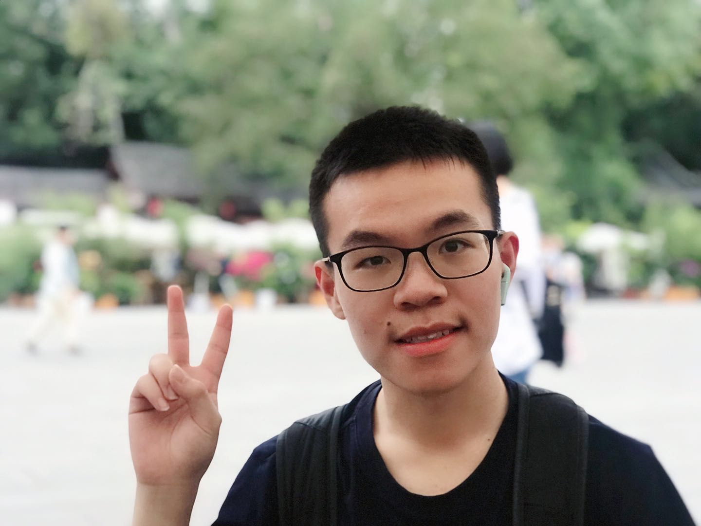

Research Interests
Education
University of Science and Technology of China, Hefei, China 2023 – Now
Master Student @ UBIoT Lab
Advisor: Prof. Wei Gong.
University of Science and Technology of China, Hefei, China 2019 – 2023
B.Eng. @ Computer Science
Publications
Awards